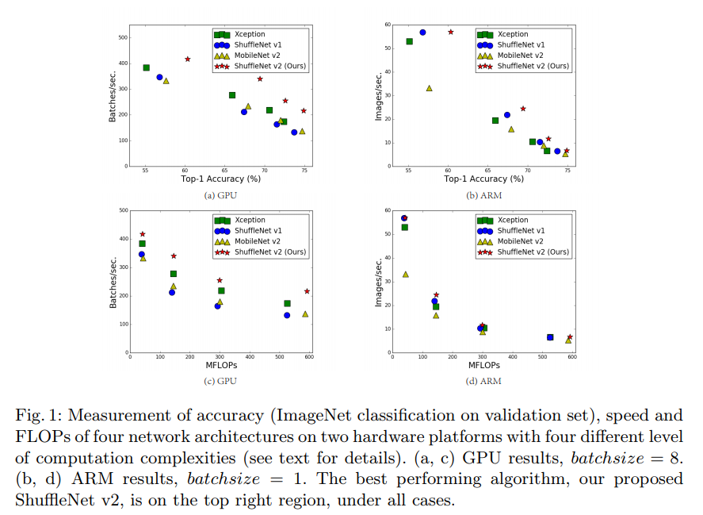
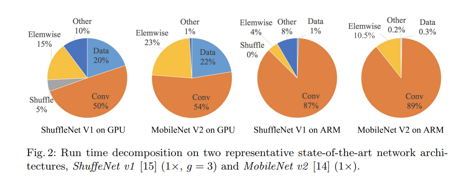
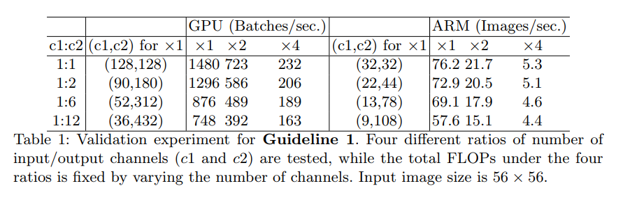
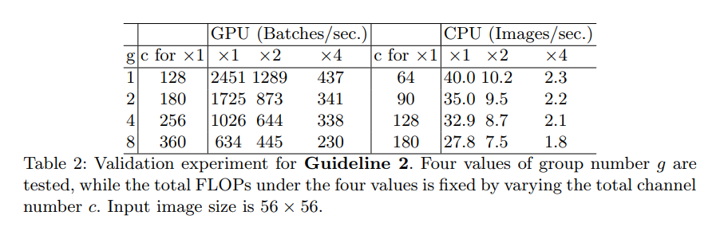
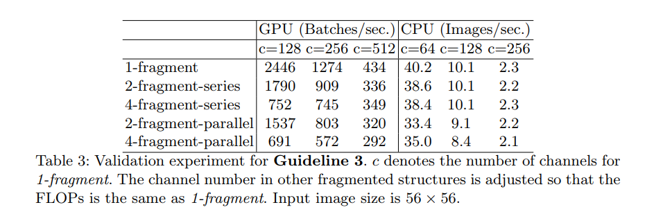
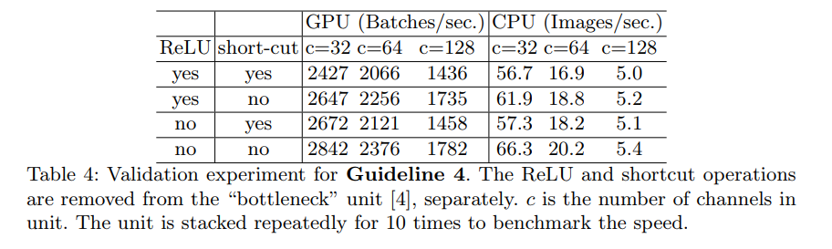
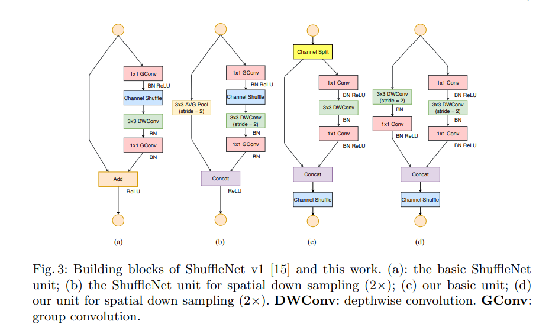
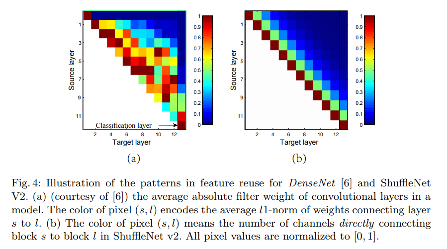

摘要
近年来，神经网络的结构设计极大地被间接度量计算复杂度（如FLOPs）导向，直接度量速度还会被其它因素诸如内存存取消耗和平台特性所影响。因此，我们的工作打算计算目标平台的直接度量，而不仅仅考虑间接度量FLOPs。基于一系列的限制性实验，我们的工作获得了一些有效的网络设计的实用指南。相应地，我们提出了ShuffleNet V2这种新的网络结构。进行了全面的消融实验后，我们证实了在速度和准确率进行权衡的情况下，ShuffleNet V2是最先进的。
介绍

深度神经网络经过最近几年的发展变得更加准确和更加快速。但是在高准确率下计算复杂度这个重要问题被忽略了。实际任务中要求在目标平台（如硬件）和应用场景（如需要低延迟的自动驾驶）这些计算有限制的情况下得到最高的准确率。这激励了一些轻量级网络的研究，并且需要在速度和准确率之间做更好地平衡，此类网络有Xception,MobileNet,MobileNet V2,ShuffleNet和CondenseNet。这些工作中分组卷积和深度卷积有十分重要的作用。
计算复杂度采用最广泛的度量是FLOPs。但FLOPs是一个间接度量。它只是一个近似值，而且和我们关注的直接度量如速度或延迟通常情况下是不等的，这种差异已经被许多工作证实。因此，仅仅使用FLOPs作为复杂度度量是不充分的，并且会导致设计的架构不是最优的。
导致间接度量（FLOPs）和直接度量（速度）的差异主要有两个。首先FLOPs没有顾忌对速度有影响的几个重要因素。一个因素是内存访问消耗，这种消耗在某些操作比如分组卷积占有很大一部分运行时间,这可能是大型设备比如GPU的瓶颈。这个成本在网络架构设计的时候不能被忽略。另一个因素是并行度。在相同的FLOPs下，高并行度的网络比低并行度的网络运行更快。
另一个因素是相同的FLOPs需要的运行时间不同,这取决于平台。比如，张量分解被广泛地用于早期的加速矩阵乘法运算。但是最近的研究发现分解在减少了75%FLOPs的情况下在GPU上的速度更慢。我们调查发现最新的CUDNN对3x3的卷积会进行特殊优化，并不能确定3x3的卷积一定比9个1x1的卷积速度慢。
根据这些观察结果，我们提出了两个应该被并用于有效网络架构设计的原则。第一，使用直接度量代替间接度量；第二，在目标平台上计算相同的度量。
在我们的工作中，我们遵循这两个原则并提出了一个更有效的网络架构。在第二部分，我们首先分析了两个具有代表性的先进网络的运行时间。之后，我们获得了四个有效网络设计的指导方针，这些方针超出了FLOPs的考虑范围，而且与平台无关。我们使用专门优化的代码在两个平台（GPU和ARM）上做了一系列控制实验去证实他们，确信我们的结果是最先进的。
在第三部分，根据指导方针，我们设计了一个新的网络结构。它是ShuffleNet网络的衍生版本，名为ShuffleNet V2。经过第四部分全面的实验后证实ShuffleNet V2在所有的平台上比之前的网络更快更准确。
有效网络设计的实际指导方针
我们的研究是在两个广泛采用的硬件上对CNN库进行工业级优化。我们注意到我们的CNN库比大部分开源的CNN库更有效，因此，我们确信我们的观察结果和结论是有力的并且在工业中实践是有意义的。

其它的设置包括：打开所有的优化项（比如：用于减少小运算带来的计算开支的张量融合）。图片的输入尺寸是$224\times 224$。每个网络进行随机初始并计算100次，采用平均运行时间。
在开始我们的工作前，我们先分析了目前两个最先进的网络ShuffleNet V1和MobiileNet V2的运行时间。它们在ImageNet分类任务中都十分有效和准确。并且它们都被低端设备比如手机广泛应用。虽然我们仅分析这两个网络，但这两个网络代表了现在的趋势。它们的核心是分组卷积和深度卷积，这些操作是目前先进网络的重要组成部分，比如ResNeXt,Xception,MobileNet和CondenseNet。
综合的运行时间被不同的运算分解，如图2，我们注意到FLOPs度量仅仅计算卷积部分的花费。尽管卷积占所有运算的大部分，但是其它的运算包括数据输入输出，数据混洗以及逐元素运算也占据了大量的时间。FLOPs不能够精准地评估运算时间。
基于这个观察结果，我们从不同的方面对运行时间提出了细节的分析，并且获得了几个有效网络架构设计的指导指南。
G1)相同的通道可以最小化内存存取消耗
现在的网络通常采用深度分离卷积，在深度分离卷积中，1x1的卷积占据了绝大部分复杂度。我们开始研究1x1卷积。1x1卷积由两个参数来表示，输入通道数$c_{1}$,输出通道数为$c_{2}$。h和w是特征图的长和宽，1x1卷积的FLOPs是
为了简化计算，我们假定计算设备足够存储全部的特征图和参数，这样的话，内存存储消耗
从均值不等的情况，我们可以得出:
从公式（1）可以看出，MAC的下限被FLOPs捆绑，输入通道数等于输出通道数的时候MAC达到最小。
这个结论只是理论上，实际中很多设备的缓存没有假设的那么大，而且现代计算库通常采用复杂的阻塞策略来充分利用缓存机制。因此，真实的MAC值肯能会偏离理论上的值。为了证实我们的结论，我们随后进行了实验，通过重复堆叠10个构建块来构建基准网络，每一个块包括两个卷积层，第一层输入通道为$c_{1}$，输出通道为$c_{2}$，下一层网络与之相反。
表1展示了实验结果，当输入输出通道数比值为1：1时，可以看出MAC值会变得更小并且网络计算速度会更快。

G2)过大的分组卷积会提高MAC
目前分组卷积是很多先进网络的核心部分，它通过将密集卷积的通道分组进行卷积来减少计算复杂度（FLOPs），因此它可以在与传统结构在FLOPs相同的情况下使用更多的通道，进而提升模型的性能。但是，提升的通道数导致了更大的MAC。
从（1）的公式进行推导，FLOPs的值
1x1的分组卷积中MAC和FLOPs的关系为：
g是分组数。从公式中可以看出，在给定输入尺寸$c_{1}\times h\times w$和计算量B，MAC的值与g的值正相关。
为了研究在实践过程中的有效性，我们堆积了10个逐点组卷积来构建基准网络。表2展示了在相同的FLOPs情况下运行速度的差异。从表中可以清晰地看出分组数对运行速度的影响。对比分组数为1和分组数为8的实验结果可以看出，分组数为8的模型运行速度是分组数为1的一倍，在ARM上的数独也慢了30%。

因此，我们建议分组数应该基于目标平台和任务认真选择。简单地增加分组数愚蠢的，因为这在增加准确率的同时也会增加计算量，很可能得不偿失。
G3)分裂网络会减少并行度
在GoogleNet的一系列网络和自动生成网络中，大量采用的了“多径”网络来提高准确率。使用小的操作（分裂网络）来代替一些大网络会带来准确率的提升，但是由于这种操作对大型计算设备如GPU的并行性不是很友好，而且会在内核启动和同步的时候带来额外消耗，因此它会增加计算量。
为了量化分裂网络是如何影响效率的，我们使用不同数量的分类网络制作了一系列网络模块进行实验。每个网络模块包含1-4个1x1的卷积，如何将10个这样的模块堆积在一起组成一个网络，然后它们进行顺序运算或者并行运算。进行的实验效果如表3所示。

表3展示了分裂网络显著地降低了GPU的速度，比如4个分裂网络结构的速度只有1个分类网络结构的1/3。在ARM上的减少相对来说很小。
G4)逐像素操作不可忽视
如图2所示，在轻量级网络中逐像素操作在时间上占据了很大一部分，特别是在GPU上。在我们文章中，逐像素操作包括ReLU，AddTensor，AddBias等等。它们有很小的FLOPs但是在有着很大的MAC。我们将深度卷积也作为逐像素的一员，因为它的MAC与FLOPs的比值很高。
为了验证我们的猜想，我们使用“bottlenecks”单元进行了实验，分别去除ReLU和短路连接，在表4中可以看到实验结果。当两个操作都被去除时，在GPU和ARM上都会得到20%的加速。

结论和讨论
根据上面的指南和研究经验，我们推断一个有效的网络架构需要1）使用平衡的卷积操作（通道相等）；2）关注分组卷积的损失；3）减少分裂的程度；4）减少逐像素操作，这些理想的属性取决于超出理论FLOPs的平台特性（例如内存操作和代码优化）。
ShuffleNet V2：一个有效的架构
评价ShuffleNet V1
ShuffleNet是目前先进的网络结构，它被广泛地用于计算能力较低的终端设备比如手机。根据ShuffleNet论文所描述的，目前轻量级网络的主要挑战是在给定计算量的前提下特征通道数量的限制。为了在不提高FLOPs的情况下提高通道数，他们采用了逐点群卷积和bottleneck型的结构。为了提高不同组之间的信息交流，他们使用了通道混洗操作，同时准确率得到提升。根据第二部分的讨论，逐点群卷积和bottleneck结构都会提高MAC(G1和G2)，这个损失是不能忽略的，并且，使用太多的分组也违背了G3，在捷径连接中的逐像素“Add”操作也违背了G4。因此，为了建立一个高效的模型，关键问题是保持与密集卷积相同的通道数，并且不能有太多的分组。
通道分离和ShuffleNet V2

根据上面的目的，我们介绍了一种简单的操作名为通道分离（channel split）。在图三(c)中可以看到。在每个单元的开始出，输入通道数c被分成了两个独立的分支c和c’。遵循G3的指导，一个分支独自保留。另一个分支由三个卷积组成并且输入输出通道数遵循G1的原则保持一致。两个1x1卷积部分遵循G2没有进行分组卷积（因为channel split操作分成了两个组）。
卷积之后两个分支被串联（concatnated)，因此通道数保持一致。与ShuffleNet相同的通道混洗操作放到了两个分支串联之后，被用来进行信息交流。
在通道混洗之后，就会开始下个单元。可以注意到ShuffleNet V1中的“Add”操作被取消了。逐像素操作如ReLU和设定卷积只存在一个分支上，并且三个连续的逐像素操作cancat,channel shuffle和channel split被合并成一个逐像素操作。根据G4这种改变是有利的。对于空间下采样，如图3（d），移除了通道分离操作，之后的通道会翻倍。
遵循上面提出的4个指导方针，我们提出了图3（c）（d）这种模块，将其命名为ShuffleNet V2。使用上面的模块进行堆积就会建好网络。为了便利，我们将c’设置为c的一半。整体的网络结构与ShuffleNet v1类似，见表5。唯一的不同之处是：ShuffleNet v1缺少了global averaged pooling层。与ShuffleNet v1相似，我们设置了不同的网络通道数比例来产生不同的网络来适应不同的复杂度。
网络准确性性分析

ShuffleNet V2网络不仅高效，而且准确，主要两个原因，每个构建模块组成的高效率能够使用更多的特征通道和更大的网络容量。第二个原因是每个模块都会有三分之一的特征通道被直接通过模块进入下一个模块。这可以理解为一种特征重用，在DenseNet和CondenseNet中有相似的部分。在DenseNet中，为了分析特征重用模式，绘制了层间权重的l1范数，如图4（a）所示。很明显，相邻层之间的连接比其他层更强。这意味着所有层之间的密集连接可能引入冗余。最近的CondenseNet也支持这一观点。在ShuffleNet V2中，很容易证明第i和第（i + j）个构建块之间的“直接连接”通道的数量是$r^{j}c$，其中r =（1-c’）/ c。换句话说，特征重用量随着两个块之间的距离呈指数衰减。在远程块之间，特征重用变得更弱。图4（b）绘制了与（a）中类似的可视化，其中r = 0.5。注意，（b）中的模式类似于（a）。因此，ShuffleNet V2通过设计实现了这种特征重用模式，它与DenseNet有着高精度特征重用的相似性，但是它的效率更高，在表8中将证实。
实验
我们的消融实验在ImageNet2012的分类数据集上进行，和之前轻量级网络的实验设置相同，所有的网络在四个复杂度上进行比较，分别为40、140、300和500MFLOPs。这些复杂度在移动场景中具有典型性，其它的超参数和协议与ShuffleNet v1相同。我们比较了4种网络：
ShuffleNet v1：分组设置为3
MobileNet v2：我们将论文中的准确率与我们复现的准确率都列出来，有一些结果论文中并没有
Xception：原始的Xception非常大，我们采用最近的一个对它进行修改后的衍生版本
DenseNet：原始的网络不适合进行对比实验，我们将表5中的2-4步替换为DenseNet网络的模块进行对比实验，通过调整通道数来控制网络复杂度。
表8显示了所有结果。我们对结果从不同方面进行分析。
同FLOPs比较速度
推理速度/(FLOPs/Accuracy)IGV2、IGV3使用通道多，速度慢。
与其它网络的兼容性
构成大网络后效果
目标检测 大的感受野可以增加目标检测的效果（Xception），我们在增加了一个3x3卷积在每个模块的1x1卷积之前，构成ShuffleNet v2*。